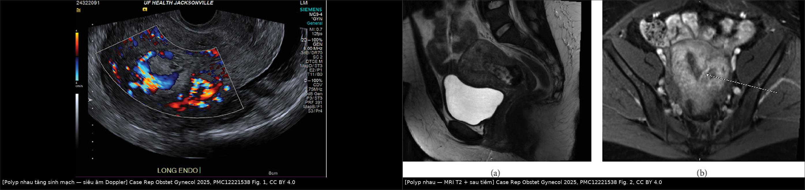
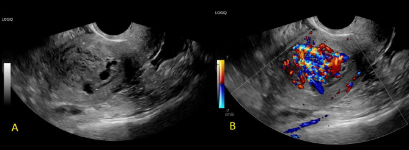
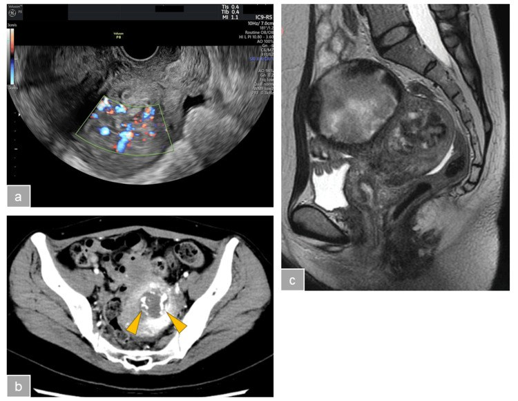

1624 — Polyp nhau & khối trong buồng tử cung sau sinh/sảy / Placental polyp
Tags: pattern:khoi-long-tu-cung pattern:tang-sinh-mach pattern:chay-mau-au-dao vung:tu-cung vung:noi-mac protocol:sieu-am-dau-do protocol:CT-mach protocol:MRI-chau score:hCG
Mức chắc chắn (certainty): tổng hợp y văn (literature synthesis) — gồm 1 đoàn hệ hồi cứu 17 ca có phân độ mạch máu (Sorano S et al., Ann Med Surg 2017, PMC5635338), 1 bài tổng quan + thuật toán chẩn đoán (Ishihara T et al., Womens Health (Lond) 2016, PMC5373263), và 5 báo ca có hình ảnh/hậu quả rõ (PMC12221538, PMC12374803, PMC10566062, PMC8142775, PMC8438750). Không có RCT; con số "tần suất" dưới đây là ước lượng từ y văn, không phải số đo dân số.
1. Tổng quan bệnh học – cơ chế hình ảnh
- Bệnh học (pathology): polyp nhau (placental polyp) là mô nhau tồn dư sau sảy/sinh/mổ lấy thai, không được tống ra, tổ chức hóa và bám chắc vào thành tử cung, tạo khối có cuống trong lòng tử cung. Mô học: gai nhau (villi) đã tổ chức + màng rụng (decidua) + cục máu thoái hóa + nội mạc tái sinh — chính thành phần xơ – máu này làm khối bám chắc, khác cục máu đông rời (Ishihara T et al. 2016).
- Tần suất — ước lượng, chưa chắc: được cho là biến chứng của < 0,25% tổng số thai kỳ, nhưng tần suất thật chưa rõ (Spielvogel R 2023, ghi rõ "actual incidence is unknown").
- Thời điểm — ngưỡng số quan trọng: trung vị 33 ngày sau khi thai kỳ kết thúc, khoảng 9–392 ngày trong đoàn hệ 17 ca (Sorano S et al. 2017). Nghĩa là polyp nhau có thể xuất hiện hơn 1 năm sau sinh/sảy — bệnh nhân thường không liên hệ với lần có thai trước, đây là lý do chẩn đoán muộn. Y văn cũng ghi nhận thể xuất hiện nhiều tháng đến nhiều năm sau thai kỳ (Di Serio M et al. 2021: 3 tháng sau sảy bằng thuốc).
- TẠI SAO chảy máu tái diễn (cơ chế mô – mạch): khối gồm gai nhau còn mạch và mô hoại tử; bề mặt bị loét – bong từng đợt khi nội mạc phủ lên trên tróc ra → chảy máu từng đợt, màu nâu – đỏ sẫm, kéo dài. Thể tăng sinh mạch (hypervascular) có động mạch nuôi lớn từ động mạch tử cung đi vào cuống → nạo buồng tử cung "mù" có thể mở đúng cuống mạch và gây băng huyết ồ ạt (Ishihara T et al. 2016).
- Đo được mức độ nguy hiểm: trong đoàn hệ 17 ca, 16/17 có chảy máu, 8 ca chảy máu nặng phải chuyển cấp cứu (Sorano S et al. 2017). Ca tăng sinh mạch nặng: tổng lượng máu mất 4 L, phải kích hoạt phác đồ truyền máu khối lượng lớn, và cuối cùng cắt tử cung (Kegel S et al. 2025). Ca khác: sốc mất máu, truyền 8 đơn vị hồng cầu + 4 đơn vị huyết tương tươi đông lạnh (Yoshiike K et al. 2025).
- TẠI SAO hCG chỉ có giá trị LOẠI TRỪ một phần (vật lý – sinh hóa): hCG giảm về mức không có thai 0–5 mIU/mL trong vòng 4 tuần sau sinh (Ishihara T et al. 2016 dẫn y văn). Vì vậy trong 4 tuần đầu, hCG còn cao không chứng minh polyp nhau; ngược lại, đoàn hệ 17 ca có hCG trung vị 3,5 mIU/mL (khoảng < 1,0–625,1), 4 ca < 1,0 mIU/mL — tức hCG thấp/âm KHÔNG loại trừ polyp nhau. Giá trị thật của hCG là phân biệt với bệnh nguyên bào nuôi tồn dư/GTN (khi đó hCG cao và/hoặc tăng dần).
- TẠI SAO siêu âm thấy khối "sáng" và Doppler là bắt buộc: khối là mô đặc – xơ – máu cũ nên echo hỗn hợp, có vùng tăng âm; Doppler màu/power phát hiện mạch trong khối và mạch nuôi từ cơ tử cung. Nhưng bản thân "có mạch" không phân biệt được polyp nhau với dị dạng động–tĩnh mạch tử cung (AVM) — Ishihara T et al. nói thẳng: Doppler của AVM "không thể phân biệt" với polyp nhau trong nhiều ca.
- TẠI SAO MRI giúp (và tại sao T2 sáng): polyp nhau thường T1 thấp, T2 cao không đồng nhất (mô phù, dịch, mạch), và flow void ở cuống khi có dòng nhanh (Ishihara T et al. 2016). AVM thì biểu hiện "khối mạch" lan tỏa, ngoằn ngoèo trong cơ tử cung, không phải khối có cuống trong lòng. Vì vậy: polyp = khối trong LÒNG có cuống; AVM = rối mạch trong CƠ.
- Phân độ mạch máu (dùng được ngay tại giường) — thang 0 → 3+: cả Doppler màu và MRI có cản quang đều chấm 4 bậc: (−) không có dòng / 1+ nhẹ–vừa / 2+ nhiều / 3+ rất nhiều. 3+ = dòng phong phú trong polyp nối liền với dòng của cơ tử cung. Nhóm mạch mạnh = 2+ hoặc 3+ (n = 13), mạch yếu = − đến 1+ (n = 4); bậc MRI tương ứng với bậc Doppler (2+ trên MRI ≈ 1+–2+ Doppler; 3+ MRI ≈ 2+ Doppler) (Sorano S et al. 2017).
2. Mẫu hình + chẩn đoán phân biệt theo vị trí (gamut)
Trục A — theo thời gian sau thai kỳ (quyết định nghĩ tới bệnh gì trước):
| Thời điểm | Nghĩ trước tiên | Vì sao |
|---|---|---|
| ≤ 4 tuần | Sản phẩm thai tồn dư (RPOC) còn hoạt động | hCG còn cao sinh lý, nội mạc dày; polyp nhau chưa tổ chức hóa xong |
| 4 tuần – 6 tháng | Polyp nhau (đỉnh ~33 ngày) | Khối có cuống, bám chắc, chảy máu từng đợt |
| > 6 tháng – nhiều năm | Polyp nhau muộn · AVM · GTN · polyp nội mạc | Bệnh nhân không nghĩ mình "còn sót nhau"; dễ bỏ |
Trục B — theo độ mạch máu (quyết định cách can thiệp, không chỉ chẩn đoán):
- Mạch yếu (−/1+): khối ít mạch → cắt qua nội soi buồng tử cung (TCR) an toàn, không cần can thiệp mạch.
- Mạch mạnh (2+/3+): có động mạch nuôi lớn → TCR đơn thuần nguy cơ băng huyết; cần giảm dòng trước (nút mạch tử cung – UAE, hoặc kẹp động mạch tử cung tạm thời qua nội soi ổ bụng).
- Mạch rất mạnh + mất máu cấp: ưu tiên UAE cấp cứu, sau đó mới bóc khối; cắt tử cung khi không kiểm soát được.
Trục C — gamut chẩn đoán phân biệt (7 thực thể):
- Sản phẩm thai tồn dư (RPOC) — mô thai còn hoạt động, hCG dương, mạch trong khối.
- Polyp nhau — mô nhau xơ hóa, bám chắc, hCG thấp/âm, khối có cuống.
- Dị dạng động–tĩnh mạch tử cung (AVM) — rối mạch trong cơ tử cung, hCG âm, dòng tốc độ cao – trở kháng thấp; nạo = nguy cơ chết người.
- Bệnh nguyên bào nuôi thể tồn dư/GTN (gồm choriocarcinoma) — hCG cao và tăng, khối xâm lấn cơ, di căn.
- Polyp nội mạc — khối nhỏ, một cuống mạch (pedicle artery), không liên quan thai kỳ.
- U xơ dưới niêm mạc — T2 tối đều, bờ rõ, không có mạch kiểu cuống mới.
- Cục máu đông tồn dư — di động, không có mạch trong khối, tự tống ra.
3. Bảng so sánh phân biệt (ma trận đối chiếu)
| Thực thể (entity) | Hình ảnh điển hình | Chốt vào (rule-in) | Chốt loại (rule-out) | Gợi ý xác nhận |
|---|---|---|---|---|
| Polyp nhau | Khối trong lòng tử cung, echo hỗn hợp, có cuống + mạch nuôi từ cơ; MRI T1 thấp, T2 cao không đồng nhất, flow void ở cuống | Khối có cuống bám thành + tiền sử thai/sảy + chảy máu từng đợt + hCG thấp | Không có mạch trong khối + khối di động → cục máu; rối mạch trong cơ → AVM | TCR lấy mô + mô bệnh học |
| RPOC hoạt động | Nội mạc dày không đều, khối trong lòng có mạch, có thể mất tiếp giáp nội mạc – cơ | ≤ 4 tuần sau thai + hCG còn dương + mạch trong khối | > 4 tuần + hCG < 5 mIU/mL → ít khả năng RPOC hoạt động | Theo dõi hCG; TCR/hút nếu chảy máu |
| AVM tử cung | Rối mạch trong CƠ tử cung, nhiều ổ, dòng tốc độ cao – trở kháng thấp; MRI: nhiều flow void lan tỏa | hCG âm + rối mạch lan trong cơ + tiền sử nạo/mổ | Khối khu trú trong LÒNG có cuống đơn độc → polyp, không phải AVM | CT/DSA lập bản đồ; KHÔNG nạo mù |
| GTN / choriocarcinoma | Khối xâm lấn cơ, tăng sinh mạch, hoại tử – xuất huyết, có thể di căn phổi | hCG cao và tăng dần + khối xâm lấn cơ | hCG thấp, ổn định (< 5 mIU/mL) → không nghĩ GTN | hCG chuỗi + CT ngực; FIGO/WHO |
| Polyp nội mạc | Khối nhỏ trong lòng, một cuống mạch, T2 trung tính | Một cuống mạch đơn độc + không liên quan thai kỳ | Nhiều mạch + cuống rộng + tiền sử thai gần → polyp nhau | TCR + mô bệnh |
| U xơ dưới niêm mạc | Khối T2 tối đều, bờ rõ, có vỏ giả, mạch bao quanh chứ không phải mạch trong | T2 tối đều + bờ rõ + vôi hóa | T2 cao không đồng nhất + mạch trong khối → polyp/RPOC | MRI; TCR |

Trái: siêu âm đầu dò âm đạo có Doppler màu — nội mạc dày 2,7 cm, tăng sinh mạch rõ trong khối. Phải: MRI (a) T2 đứng dọc và (b) sau tiêm trục — khối 4 cm trong lòng tử cung có mạch nuôi và vùng xuất huyết cấp. Nguồn: Kegel S et al., Case Rep Obstet Gynecol 2025, PMC12221538 Fig. 1–2, CC BY 4.0. Ảnh ghép letterbox, không crop.Ba dấu hiệu "đọc được" quyết định hướng đi
- Vị trí: trong lòng tử cung (polyp/RPOC) hay trong cơ tử cung (AVM/GTN) — đây là câu hỏi đầu tiên, quyết định có được nạo hay không.
- Cuống: một cuống + mạch nuôi từ cơ tử cung = polyp; nhiều ổ mạch lan tỏa = AVM.
- hCG: thấp/âm nghiêng polyp/AVM; cao hoặc tăng nghiêng GTN/RPOC hoạt động.
4. Protocol chụp + phân độ mạch máu + xử trí
Thứ tự hình ảnh (bắt buộc theo trình tự này khi có chảy máu âm đạo muộn sau sinh/sảy):
| Bước | Phương thức | Thông số / nội dung | Vì sao |
|---|---|---|---|
| 1 | Siêu âm đầu dò âm đạo + Doppler màu/power | Đo nội mạc, mô tả khối (vị trí, cuống, echo), chấm độ mạch 0–3+; đặt PRF thấp để không bỏ sót dòng chậm | Tại giường, rẻ; phân tầng mạch máu là yếu tố dự báo chảy máu |
| 2 | β-hCG huyết thanh | So với mốc 0–5 mIU/mL; lặp lại để xem xu hướng | Loại trừ GTN; không dùng để chẩn đoán polyp |
| 3 | CT mạch (CTA) bụng–chậu | Dựng 3D: động mạch nuôi (từ động mạch tử cung) vs nidus – mạch vào/ra của AVM | Lập bản đồ trước can thiệp; nhanh hơn MRI khi đang chảy máu |
| 4 | MRI chậu (T1/T2 + gadolinium) | Xác định trong lòng vs trong cơ, flow void ở cuống, mức ngấm | Khi không chảy máu cấp; phân biệt polyp – AVM – GTN tốt hơn |
Phân độ mạch máu 0–3+ (Sorano S et al. 2017) — dùng cả Doppler và MRI, hai bậc tương ứng nhau:
| Bậc | Doppler màu | MRI sau tiêm | Nhóm | Cách xử trí đã báo cáo |
|---|---|---|---|---|
| − | Không có dòng | Không ngấm | Yếu (n = 4) | TCR đơn thuần an toàn (1 ca tự khỏi khi chờ mổ) |
| 1+ | Nhẹ – vừa | Nhẹ – vừa | Yếu | TCR đơn thuần |
| 2+ | Nhiều | Nhiều | Mạnh (n = 13) | UAE trước + TCR: 10/10 không chảy máu nặng |
| 3+ | Rất nhiều, liền với dòng cơ tử cung | Rất nhiều | Mạnh | Như trên; TCR không UAE: 2/3 ca chảy máu nặng, cả 2 phải truyền máu, 1 ca phải UAE sau mổ |
flowchart TD
A[Chay mau am dao muon sau sinh hoac say] --> B[Sieu am dau do am dao + Doppler: cham mach 0-3+]
B --> C[hCG huyet thanh: so moc 0-5 mIU/mL]
C --> D{Khoi trong LONG tu cung?}
D -->|Khong: roi mach trong CO| E[Nghi AVM: CTA/DSA - CAM nao mu]
D -->|Co| F{Mach 2+ hoac 3+?}
F -->|Khong: - den 1+| G[TCR don thuan]
F -->|Co| H{Chay mau cap, huyet dong khong on?}
H -->|Co| I[UAE cap cuu hoac kep DM tu cung tam thoi]
H -->|Khong| J[UAE truoc roi TCR]
I --> J
J --> K[Mo benh: gai nhau + mang rung + mau cu]
G --> K
E --> L[UAE / can thiep mach - KHONG nao]
K --> M{hCG cao hoac tang?}
M -->|Co| N[Gui GTN: hCG chuoi + CT nguc]
M -->|Khong| O[Theo doi 3 thang]
Điểm thực hành quan trọng:
- Không nạo buồng tử cung "mù" khi Doppler thấy mạch mạnh (2+/3+) — đây là sai lầm gây băng huyết. Đoàn hệ cho thấy TCR không UAE ở nhóm mạch mạnh: 2/3 ca chảy máu nặng.
- Lựa chọn thay UAE: kẹp động mạch tử cung tạm thời qua nội soi ổ bụng rồi TCR — tránh liều xạ, tránh thiếu máu tử cung lâu dài, và quan sát được thủng tử cung (Yoshiike K et al. 2025). Ca này bệnh nhân mất 8 đơn vị hồng cầu + 4 đơn vị huyết tương trước đó.
- Nếu đã UAE mà vẫn chảy máu: ca Kegel S et al. (2025) — UAE hai bên ngày hậu sản 1 nhưng vẫn chảy máu, phải hút lại lần 2, rồi tái nhập ngày 15 vì khối tăng sinh mạch còn đó → cắt tử cung theo nguyện vọng. Bài học: UAE cầm máu chứ không lấy mô; khối còn thì còn nguồn chảy.
- Theo dõi sau điều trị: siêu âm lại 3 tháng; ca Spielvogel R (2023) không tái phát sau 3 tháng; hCG không cần đo lại thường quy nếu trước đó thấp (đoàn hệ không đo hCG sau điều trị ở bất kỳ ca nào).
5. Biến thể bình thường và cạm bẫy
- Cạm bẫy 1 — "đã sạch sẽ sau sảy" nên loại trừ: ca Spielvogel R (2023) có siêu âm 1 tuần sau sảy bằng thuốc xác nhận sạch, hết ra máu, rồi 2 tháng sau xuất hiện khối tăng sinh mạch mới. Kết luận "sạch" ở thời điểm sớm không loại trừ polyp nhau về sau.
- Cạm bẫy 2 — hCG thấp bị dùng để loại trừ: 4/12 ca có hCG < 1,0 mIU/mL mà vẫn là polyp nhau (Sorano S et al. 2017). Đừng loại trừ vì hCG âm.
- Cạm bẫy 3 — nạo trên AVM: Doppler "có mạch" không phân biệt polyp với AVM (Ishihara T et al. 2016). Nếu khối nằm trong cơ, nhiều ổ mạch, hCG âm → tuyệt đối không nạo; chuyển CTA/DSA.
- Cạm bẫy 4 — chỉ thấy "nội mạc dày": ca Kegel S et al. hình ảnh ban đầu chỉ là nội mạc dày 2,7 cm tăng sinh mạch; nếu chỉ mô tả "nội mạc dày" sẽ bỏ khối 4 cm thật sự. Luôn đo và mô tả khối, không chỉ độ dày nội mạc.
- Cạm bẫy 5 — cài đặt Doppler sai: PRF cao (thang vận tốc lớn) làm mất dòng chậm trong polyp; hạ PRF và tăng gain vừa phải trước khi kết luận "không có mạch".
- Cạm bẫy 6 — nhầm với biến thể bình thường: cục máu đông trong lòng tử cung hậu sản là bình thường và không có mạch trong khối; nội mạc dày ≤ 1,3 cm đối xứng, không khối, không mạch sau sảy là hình ảnh chờ hồi phục, không phải polyp. Đừng can thiệp chỉ vì "nội mạc dày".
- Cạm bẫy 7 — quên tuyến giáp/nhiễm trùng: polyp nhau có thể là ổ nhiễm khuẩn (sốt, dịch hôi) và gây thiếu máu thiếu sắt mạn; đừng chỉ tập trung vào "khối" mà bỏ toàn cảnh.
6. Tự lượng giá — Blind Quiz
Ca 1 — Sản phụ 29 tuổi, sinh thường 36 tuần, ra máu tiếp diễn sau sinh. Nhìn ảnh trước, mô tả trước khi mở đáp án.
- Gợi ý lâm sàng: lượng máu mất lúc sinh 1.300 mL, đã hút buồng tử cung vì còn mô; vẫn ra máu.
- Câu hỏi: (1) Khối nằm ở đâu, kích thước? (2) Vì sao khối "tăng sinh mạch" lại là yếu tố quyết định cách xử trí? (3) Ba chẩn đoán phân biệt và dấu chốt?
Bấm để hiện đáp án (findings + chẩn đoán)
- Dấu hiệu: nội mạc dày 2,7 cm, tăng sinh mạch rõ; MRI thấy khối 4 cm trong lòng tử cung có mạch nuôi + vùng xuất huyết cấp.
- Chẩn đoán: polyp nhau tăng sinh mạch — mô nhau tổ chức hóa bám chắc, có động mạch nuôi lớn nên hút/nạo không lấy hết và gây chảy máu.
- Diễn biến thật của ca: tổng mất máu 4 L, truyền máu khối lượng lớn, UAE hai bên ngày hậu sản 1, vẫn chảy → hút lần 2 → tái nhập ngày 15 → cắt tử cung.
- Phân biệt: RPOC hoạt động (hCG còn cao), AVM (rối mạch trong cơ, hCG âm), GTN (hCG cao/tăng).
- Nguồn ảnh: Kegel S et al., Case Rep Obstet Gynecol 2025, PMC12221538 Fig. 1–2, CC BY 4.0.
Ca 2 — Sảy bằng thuốc, siêu âm 1 tuần sau sạch, hết ra máu. Hai tháng sau ra máu trở lại.

- Câu hỏi: (1) Mô tả khối trên 2 ảnh (A không Doppler, B có Doppler)? (2) Có cần nạo ngay không? (3) Theo dõi thế nào?
Bấm để hiện đáp án
- Dấu hiệu: (A) khối echo hỗn hợp trong lòng tử cung; (B) tăng sinh mạch rõ trong khối.
- Chẩn đoán: polyp nhau sau sảy hoàn toàn — khối mới xuất hiện dù lần siêu âm trước sạch.
- Xử trí trong ca: hút buồng tử cung bằng ống hút điện tại phòng khám đã khỏi; siêu âm 3 tháng sau không tái phát.
- Bài học: "sạch sau sảy" không loại trừ polyp nhau muộn; khối có mạch nhưng nhỏ, chảy máu vừa → hút có kiểm soát là đủ.
- Nguồn ảnh: Spielvogel R, BMC Womens Health 2023, PMC10566062 Fig. 2, CC BY 4.0.
Ca 3 — Sau sảy, sốc mất máu. Ảnh gồm siêu âm Doppler, CT có cản quang và MRI.

- Câu hỏi: (1) Ba ảnh cho thấy gì giống nhau? (2) Vì sao phải xử lý mạch trước khi bóc khối? (3) Nêu một cách giảm dòng không dùng tia xạ.
Bấm để hiện đáp án
- Dấu hiệu: (a) siêu âm Doppler — khối trong lòng tử cung tăng sinh mạch mạnh; (b) CT trục có cản quang — khối ngấm thuốc mạnh (đầu mũi tên); (c) MRI T2 đứng dọc — khối chiếm lòng tử cung.
- Chẩn đoán: polyp nhau tăng sinh mạch gây sốc mất máu; bệnh nhân đã được truyền 8 đơn vị hồng cầu + 4 đơn vị huyết tương tươi đông lạnh.
- Vì sao xử lý mạch trước: cắt khối khi động mạch tử cung còn tưới đầy đủ → mở cuống mạch lớn → băng huyết; giảm dòng trước làm cuộc bóc khối "khô" hơn.
- Cách không dùng tia xạ: kẹp động mạch tử cung tạm thời qua nội soi ổ bụng rồi TCR; đây là kỹ thuật của ca này, tránh liều xạ của UAE và tránh thiếu máu tử cung kéo dài.
- Nguồn ảnh: Yoshiike K et al., Cureus 2025, PMC12374803 Fig. 1, CC BY 4.0.
Bài liên quan chéo
- 500 – Tổng quan Hệ Vú & Sản phụ khoa
- 550 – Thai sớm, sảy thai, thai ngoài tử cung (bối cảnh sảy thai – nguồn gốc polyp nhau)
- 551 – Bệnh nguyên bào nuôi thai kỳ (phân biệt với GTN, hCG chuỗi)
- 553 – Đảo ngược tử cung do sinh (băng huyết sau sinh, khối trong âm đạo)
- 554 – Polyp nội mạc & u xơ có cuống sa qua cổ tử cung (khối trong lòng tử cung, cuống mạch)
- 1623 – Huyết khối tĩnh mạch buồng trứng sau sinh (đau + sốt sau sinh)
- 1640 – Xoắn tử cung trong thai kỳ (đau bụng cấp + bất thường trục tử cung)
Không dùng để chẩn đoán độc lập khi chưa có người hướng dẫn.